Auntie Rhea Food & Water
Dustline · FOOD · WATER
| Objeto | Pagás | Te pagan | Stock |
|---|---|---|---|
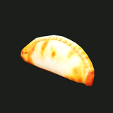 Empanada | 6 Metal | 2 Metal | sin límite |
Mecánicas
Todos los comerciantes de DEEPKIN usan el mismo mostrador: hablales, elegí BUY o SELL y se abre la ventana de comercio. Pagás con las monedas que llevás encima, nunca con el banco.
Los precios y números son de balance provisorio y pueden cambiar.
Dustline · FOOD · WATER
| Objeto | Pagás | Te pagan | Stock |
|---|---|---|---|
 Empanada | 6 Metal | 2 Metal | sin límite |
Dustline · AMMUNITION
| Objeto | Pagás | Te pagan | Stock |
|---|---|---|---|
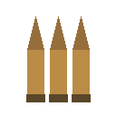 Field Round | 3 Metal | 1 Metal | sin límite |
| 6 Metal | 2 Metal | 120 |
Dustline · CONTAINER HOMES
Dustline · ORE BOUGHT
| Objeto | Pagás | Te pagan | Stock |
|---|---|---|---|
| — | 3 Metal | — | |
| — | 3 Metal | — | |
| — | 5 Metal | — | |
| Field Round | 4 Metal | 1 Metal | 60 |
Dustline · SCRAPPER'S ROW
| Objeto | Pagás | Te pagan | Stock |
|---|---|---|---|
| — | 2 Metal | — |
Dustline · TINKER
| Objeto | Pagás | Te pagan | Stock |
|---|---|---|---|
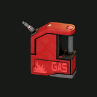 Gas Can | 32 Metal | 10 Metal | 6 |
| Servo Core | 45 Metal | 15 Metal | 4 |
| — | 4 Metal | — |
Dustline · BIKE SHOP
Dustline · CELLS · CAPSULES
| Objeto | Pagás | Te pagan | Stock |
|---|---|---|---|
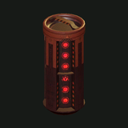 Health Capsule | 25 Metal | — | sin límite |
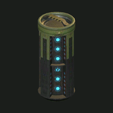 Battery Cell I | 250 Metal | — | 6 |
Dustline · BIKE SHOP
| Objeto | Pagás | Te pagan | Stock |
|---|---|---|---|
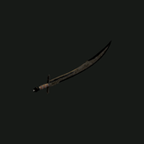 Scrapblade | 120 Metal | — | sin límite |
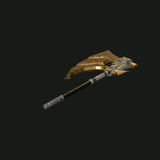 Breaker Axe | 150 Metal | — | sin límite |
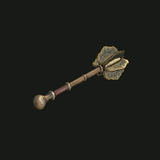 Breaker Mace | 160 Metal | — | sin límite |
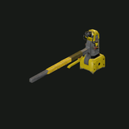 Breaker Hammer | 170 Metal | — | sin límite |
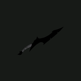 Relay Knife | 110 Metal | — | sin límite |
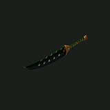 Twin Blades | 160 Metal | — | sin límite |
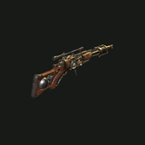 Relay Carbine | 210 Metal | — | sin límite |
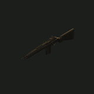 Scout Rifle | 180 Metal | — | sin límite |
| 200 Metal | — | sin límite | |
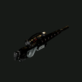 Longshot | 220 Metal | — | sin límite |
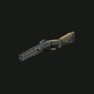 Rivet Caster | 140 Metal | — | sin límite |
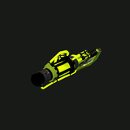 Spore Projector | 190 Metal | — | sin límite |
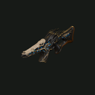 Synapse Carbine | 200 Metal | — | sin límite |
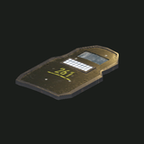 Sentinel Shield | 150 Metal | — | sin límite |
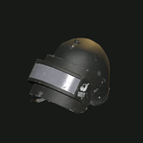 K6-3 Combat Helmet | — | 35 Metal | — |
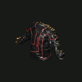 Leather Suit Jacket | — | 45 Metal | — |
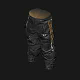 Leather Suit Trousers | — | 40 Metal | — |
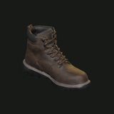 Leather Boots | — | 30 Metal | — |
| item.armor.provisional_flexweave | — | 50 Metal | — |
| item.armor.provisional_foundry_plate | — | 55 Metal | — |
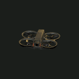 Firefly Light Drone | 300 Metal | — | sin límite |
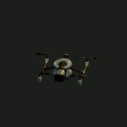 Kestrel Assault Drone | 3 500 Metal | — | sin límite |
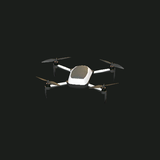 Mule Scan Drone | 900 Metal | — | sin límite |
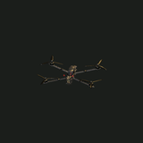 Wren Scan Drone | 1 400 Metal | — | sin límite |
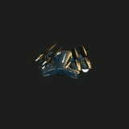 Owl Scan-Light Drone | 2 200 Metal | — | sin límite |
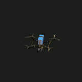 Hornet Strike Drone | 1 200 Metal | — | sin límite |
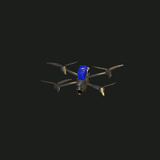 Hammerhead Strike Drone | 2 400 Metal | — | sin límite |
Dustline · TRADER
| Objeto | Pagás | Te pagan | Stock |
|---|---|---|---|
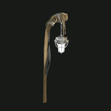 Simple Lantern | 60 Metal | 5 Metal | sin límite |
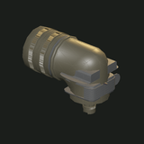 Storm Lantern | 180 Metal | 60 Metal | sin límite |
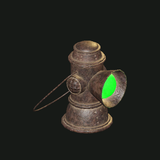 Brass Lantern | 260 Metal | 85 Metal | sin límite |
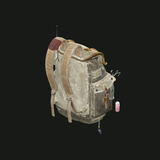 Backpack | 150 Metal | 50 Metal | sin límite |
Dustline · VANTAGE DEEP INDUSTRIES
| Objeto | Pagás | Te pagan | Stock |
|---|---|---|---|
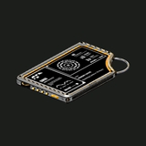 Expedition Service | 10 000 Metal | — | sin límite |
Dustline · ROOMS
| Objeto | Pagás | Te pagan | Stock |
|---|---|---|---|
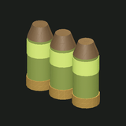 Spore Cartridge | 4 Metal | 1 Metal | sin límite |
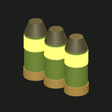 Virulent Cartridge | 9 Metal | 3 Metal | 80 |
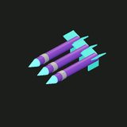 Synapse Dart | 5 Metal | 2 Metal | sin límite |
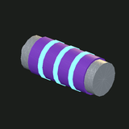 Synapse Surge | 11 Metal | 4 Metal | 60 |
Algunos mostradores venden servicios en vez de mercadería.
Banco y moneda · Baterías y recarga · Comida · Vehículos · Casas · Excavaciones (VDI) · Dustline
↑ ↓ para moverte · Enter para abrir · / en cualquier página para buscar